Two knees walk into a clinic looking almost identical: swollen, warm, migrating from joint to joint, the patient systemically unwell. One of them is sterile. The other is full of live bacteria eating through the joint in real time.
Same bedside picture, opposite internal reality. Get the call wrong and a patient with a self-limited immune reaction gets an unnecessary joint washout, or a patient with live gonococcal infection gets sent home while the bacteria keep multiplying.
Reactive arthritis begins somewhere the joint isn't. A mucosal infection, gut or genital tract, gets fought off and cleared by the immune system. That part of the story is already over by the time the joint gets involved. There's no bacteria left anywhere near the joint at any point in this pathway.
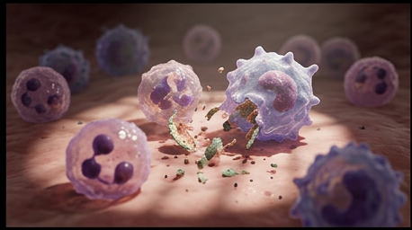
What travels to the joint afterward isn't the organism. It's a population of T-cells that were trained to recognize that organism, and those T-cells don't stop circulating just because the infection is gone.
This is the mechanistic core of reactive arthritis. HLA-B27 presents a fragment of the original organism to a T-cell, training that T-cell to attack it. The problem: a joint self-antigen looks close enough to that fragment that the same T-cell attacks the joint's own tissue instead. This is molecular mimicry, and it's why reactive arthritis runs heavily in HLA-B27-positive patients, roughly 75 percent by some estimates.
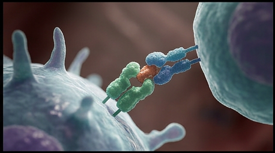
The joint fluid stays completely organism-free throughout. Every bit of the inflammation here, the swelling, the warmth, the pain, is autoimmune. The joint is collateral damage in a fight that was actually won somewhere else entirely.
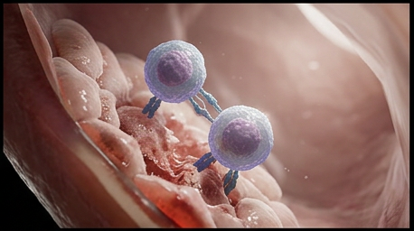
Those same cross-reactive T-cells don't stop at the knee. They go after the enthesis too, the exact spot where a tendon inserts into bone. Take the Achilles: it crosses behind the ankle joint and anchors onto the calcaneus, the heel bone, well behind and below the tibia and fibula. Get that geometry wrong and the whole illustration falls apart, so here's the anatomy dialed in.
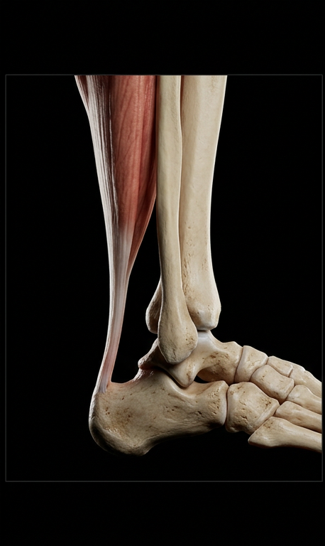
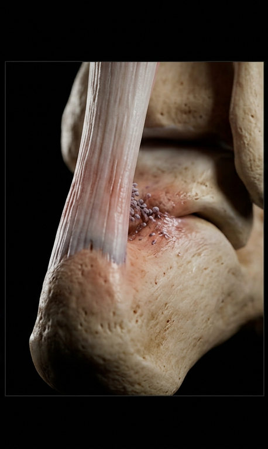
This isn't incidental heel pain. It's a defining feature, and it's what places reactive arthritis in the seronegative spondyloarthropathy family, right alongside ankylosing spondylitis and psoriatic arthritis. Not a separate complaint. Same disease family. So when a patient shows up with a swollen knee and a tender heel, weeks after a GI bug or a genital infection, that's not two problems. That's one immune process, showing up at two different insertion sites.
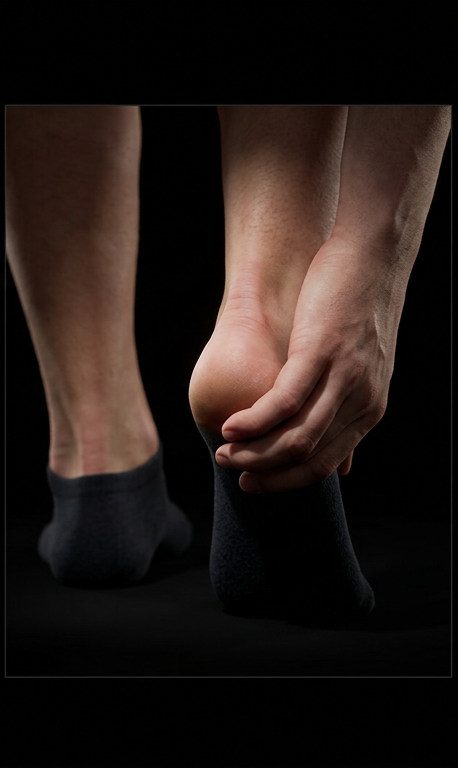
Disseminated gonococcal infection runs the opposite path entirely. Neisseria gonorrhoeae breaches the mucosal barrier and gets directly into the bloodstream. Live bacteria, not primed T-cells, do the traveling.
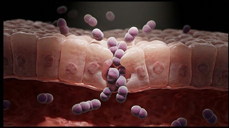
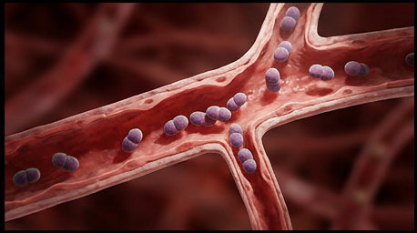
Disseminated gonococcal infection develops in only 0.5 to 3.0 percent of untreated gonococcal infections, but when it seeds a joint, it seeds it with the actual organism. Neutrophils flood in to fight a real, live infection, not a case of mistaken identity.
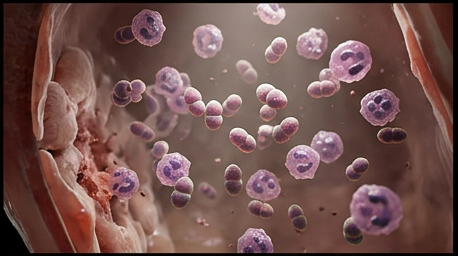
Bedside, these two conditions can look nearly the same: migratory polyarthralgia, tenosynovitis, systemic symptoms. The joint aspiration is what actually separates them, because the fluid itself is telling two completely different stories.
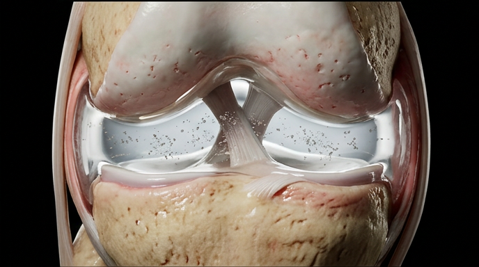
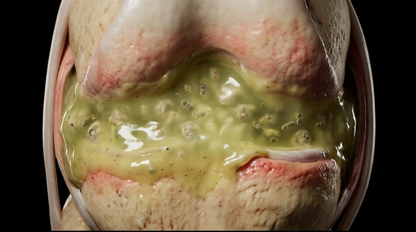
Under magnification, the difference is unmistakable: live diplococci multiplying with neutrophils actively engaging them on one side, cross-reactive immune complexes and T-cells attacking self-tissue with zero organism present on the other.
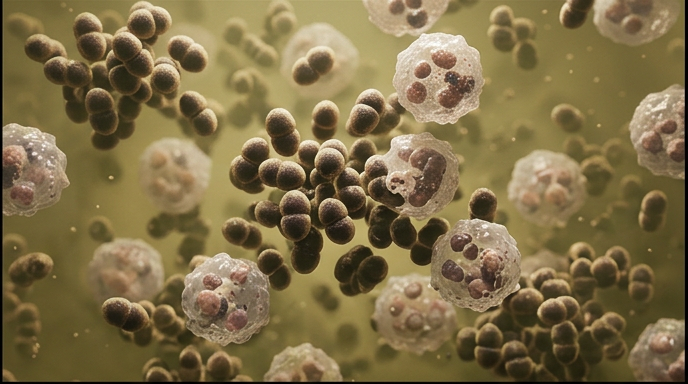
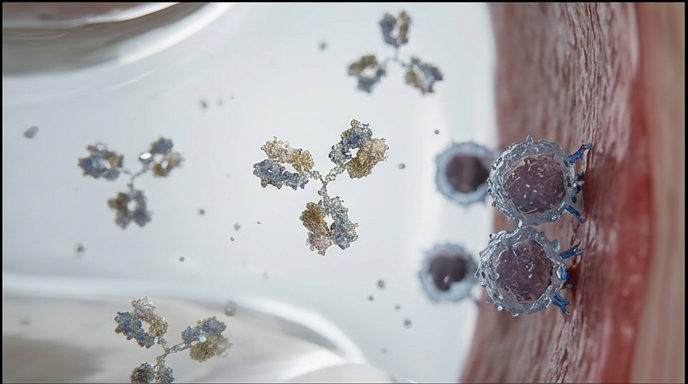
Septic arthritis must be actively ruled out before reactive arthritis is diagnosed. That means a tap happens first, every time, even when the story sounds textbook for reactive arthritis. Gonococcal arthritis is the most common cause of septic arthritis in otherwise healthy young adults in the United States, and it's exactly the population that also gets reactive arthritis.
Same joint, same swelling, same systemic misery, and two completely opposite mechanisms hiding underneath. Reactive arthritis is autoimmune arthritis, a T-cell attack that outlives the infection that trained it, sterile from the first drop of fluid to the last. Disseminated gonococcal infection is a live bacterial invasion that happened to land in a joint after traveling through the bloodstream from a mucosal infection that was never actually cleared. The physical exam alone won't reliably tell them apart. The tap will, and even then, a negative culture doesn't close the case on DGI, since more than half of true cases culture negative. The rule that holds regardless: assume septic until proven otherwise, because treating a sterile joint like it's infected costs a few unnecessary antibiotic days, but treating an infected joint like it's sterile costs cartilage, and sometimes the joint itself.